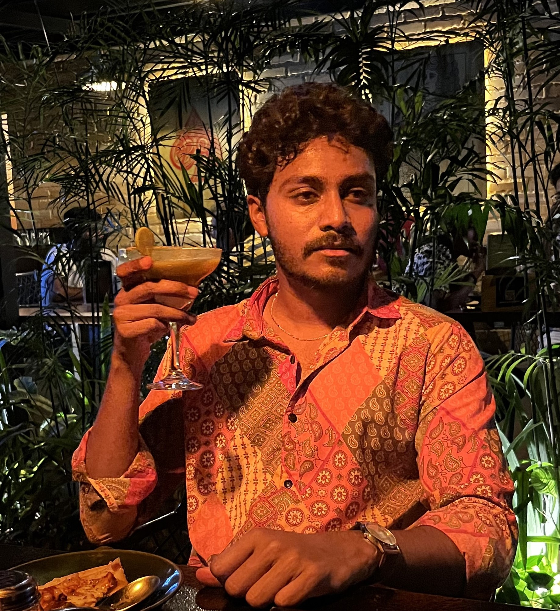

Tilak K N

Summary
Dedicated and detail-oriented Frontend Developer with 3+ years of experience in developing user-friendly and responsive web applications.
Education
Bachelor's Degree from Visvesvaraya technological university,
Bengaluru.
Year of Graduation: 2020
Work experience
Associate Engineer - DataPMI, Bengaluru
Jan/2021 to March/2022
- Developed and maintained responsive web applications using HTML, CSS, and JavaScript.
- Implemented frontend functionality using React.js, ensuring seamless user interactions and efficient data handling.
- Collaborated with designers to translate UI/UX wireframes into code, ensuring consistency and usability across platforms.
Associate Engineer - Ziniosedge, Bengaluru
Aug/2023 to June/2024
- Developed and maintained responsive web applications using HTML, CSS, and JavaScript.
- Implemented frontend functionality using React.js, ensuring seamless user interactions and efficient data handling.
- Collaborated with designers to translate UI/UX wireframes into code, ensuring consistency and usability across platforms.
- Worked closely with backend developers to integrate frontend interfaces with server-side logic.
- Participated in agile ceremonies, including sprint planning, daily stand-ups, and retrospective meetings.
Skills
- Proficient in HTML, CSS, JavaScript
- Experience with React.js, SQL
- Responsive Web Design
- Agile Development Methodologies
- UI/UX Design Implementation
Certifications
- Frontend Web development - Udemy
Others